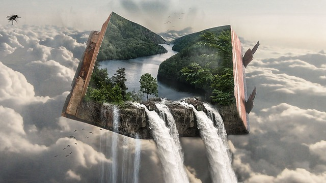
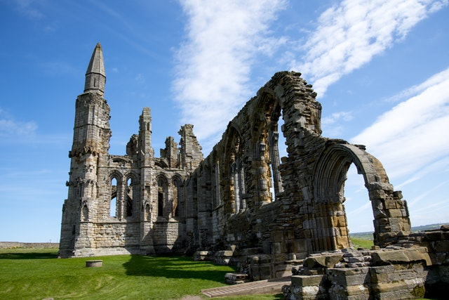

O mnie
Jestem jeszcze w miarę młodym mężczyzną (27 lat to niedużo!) mieszkającym od urodzenia we Wrocławiu. Aktualnie pracuję jako brokerage rater i do swojej pracy codziennie dojeżdżam na rowerze (tak wiem jestem zmorą kierowców). Jestem optymistą i staram się iść przez życie zawsze z pozytywnym nastawieniem i otwartym umysłem. Lubię wyzwania i satysfakcję wynikająca z pokonywania problemów napotykanych po drodze.
Moje zainteresowania
Nic tak nie przemawia za człowiekiem jak to czym się interesuje. Dlatego też zachęcam do zapoznania się z moimi zamiłowaniami.
Książki fantasy/sci-fi
Dla mnie najlepszą rozrywką jest czytanie książek. Nie ma nic lepszego od spokojnego wieczoru z dużym kubkiem herbaty i dobrą książką w ręku. Jak nagłówek wskazuje najczęściej sięgam po książki fantasy i science fiction. Uwielbiam zanurzać się w nowych, ekscytujących światach powstałych tylko i wyłącznie w głowach autorów. W szczególności zachęcam do czytania dzieł tych twórców: Steven Erickson, Brandon Sanderson, Dan Simmons, Terry Pratchet, G.R.R. Martin i oczywiście J.R. Tolkien.
Wędrówki po górach
Ponoć ludzie się dzielą na tych co wolą góry albo morze. Ja co prawda lubię morze, lecz jak mam wybór to faktycznie Góry zawsze będą dla mnie na pierwszym miejscu. Żadne zdjęcie nie odda tego wspaniałego widoku jak jest się na szczycie i przed tobą rozpościera się wspaniały pejzaż. Wędrowianie po górach jest wspaniałym lekarstwem na codzienne troski i zmartwienia. W trakcie zdobywania góry widzimy piękną zróżnicowaną naturę w przeróżnych odsłonach w zależności czy jesteśmy w niskiej czy wysokiej partii. Natomiast po zdobyciu szczytu okupionego często niemałym wysiłkiem dostajemy zastrzyk satysfakcji, poczucia zwycięstwa nad tymi kolosami. Może właśnie dlatego tak często powracam w góry?
Podróżowanie
Co tu się rozwodzić. Któż nie lubi podróżować? Chyba każdy na pytanie co lubi robić, odpowie: zwiedzać świat. Podróżowanie stało się w obecnych czasach niezwykle modne, czego dowodem jest stale zwiększająca się ilość książek, blogów, programów telewizyjnych poświęconych temu tematowi. Oczywiście bardzo dobrze, że większą ilość ludzi stać na wyjazdy w piękne miejsca, choć czasem jest to irytujące, gdy czekamy pół dnia w kolejce do znanego muzeum lub miejsce, które miało być ostoją ciszy jest wypełnione po brzegi turystami. Jednak im więcej ludzi zwiedza wspaniałe miejsca tym lepiej. W końcu podróże kształcą, a pewnych doświadczeń nie można wyczytać z książek.
Nowe technologie
Może nie jestem pasjonatem wszelkich nowych gadżetów, które co roku zasypują rynek konsumentów. Jednak jestem w pełni zainteresowany nowymi technologiami, które zmieniają oblicze ludzkości. Około 15 lat temu mało kto posiadał (przynajmniej w Polsce) komórkę i internet domowy. Obecnie nie wyobrażamy sobie życia bez tych dwóch rzeczy. Mamy to szczęście, że żyjemy w bardzo dynamicznie zmieniających się czasach i jestem niezmiernie ciekawy co przyniosą nam technologie przyszłości.
Gry RPG
Gry RPG czyli role playing games są wspaniałą formą rozrywki bo w ich przypadku jedynym ograniczeniem jest nasza wyobraźnia. Gry te polegają na tym, iż wszystko się dzieje tylko w naszych głowach. Jedna osoba zwana mistrzem gry jest odpowiedzialna za kreowanie świata i przygód jakie się w nim rozgrywają. Natomiast pozostałe osoby tworzą sobie jakąś postać i ją odgrywają. Istnieje wiele niezwykle popularnych settingów jak D&D, Warhammer, Świat Mroku i wiele innych, w których zanurzamy się w ciekawy świat wymyślony przez autorów, wraz z jego mechanikami, lecz nic nie stoi na przeszkodzie, aby grać w naszych zwariowanych wytworach wyobraźni.
Historia
Historia jest niezwykle ważną dziedziną wiedzy, którą powinien posiadać każdy w choć minimalnym stopniu. To dzięki niej wiemy dlaczego żyjemy tak, a nie inaczej. W końcu gdyby Karol Młot nie pokonal Muzułmanów w bitwie pod Poitiers być może w całej Europie królowałby teraz Islam. Gdyby Louis Pasteur nie opracował szczepionki na wściekliznę kto wie jakby wyglądał obecny świat. Historia pozwala nam zrozumieć skąd podążamy, a dzięki temu poniekąd dowiadujemy się w którą stronę zmierzamy. Dlatego też historia przybliża nas do poznania otaczającego nas świata, a któż nie chce więcej wiedzieć?
Praca i nauka
Doświadczenie zawodowe
Ups Global Business Services Polska Sp. z o.o.
Stanowisko: Brokerage rater
Aeternus Konserwacja Zabytków Radosław Stasiuk
Stanowisko: Konserwator zabytków
Pracownia Archeologiczno – Konserwatorska „Archeolog Tomasz Ciasnocha”
Stanowisko: Archeolog
Ukończone szkoły
Uniwersytet Wrocławski, Archeologia
Specjalizacja: Wczesne Średniowiecze
XII Liceum Ogólnokształcące im. Bolesława Chrobrego we Wrocławiu
Obecnie
Front-end
Aktualnie uczę się programować w pełni responsywne strony internetowe i aplikacje od strony Front-endu. Przyswajam wszelkie dobre praktyki związane z HTML, CSS, Javascript. Mam nadzieję, że niedługo może zaprogramuję coś dla Ciebie.
Programowanie nie musi być nudne!
Bonus
Jako bonus, że udało Ci się dotrzeć tak daleko podzielę się z Tobą zdjęciami moich 2 kotów :)